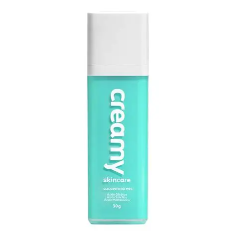
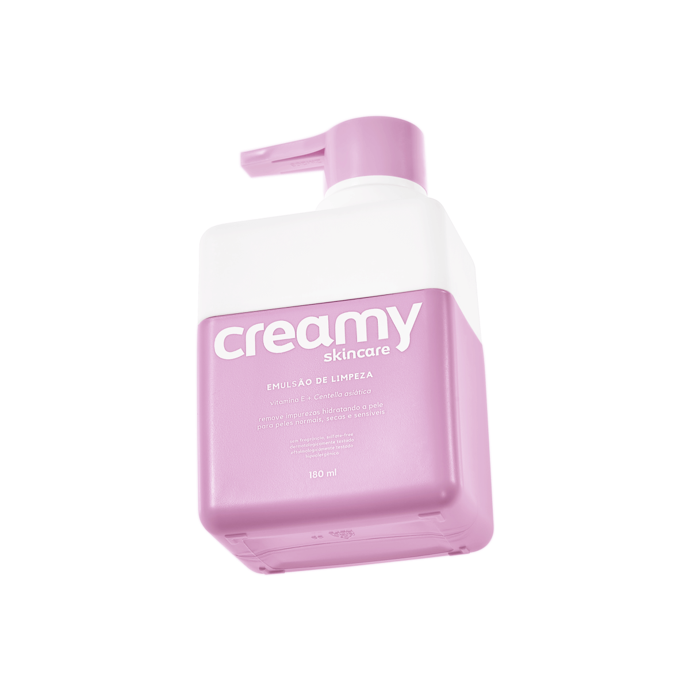
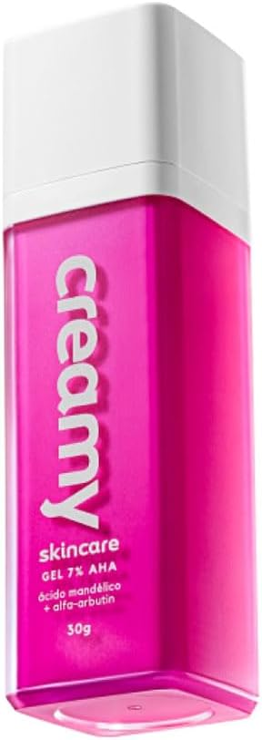
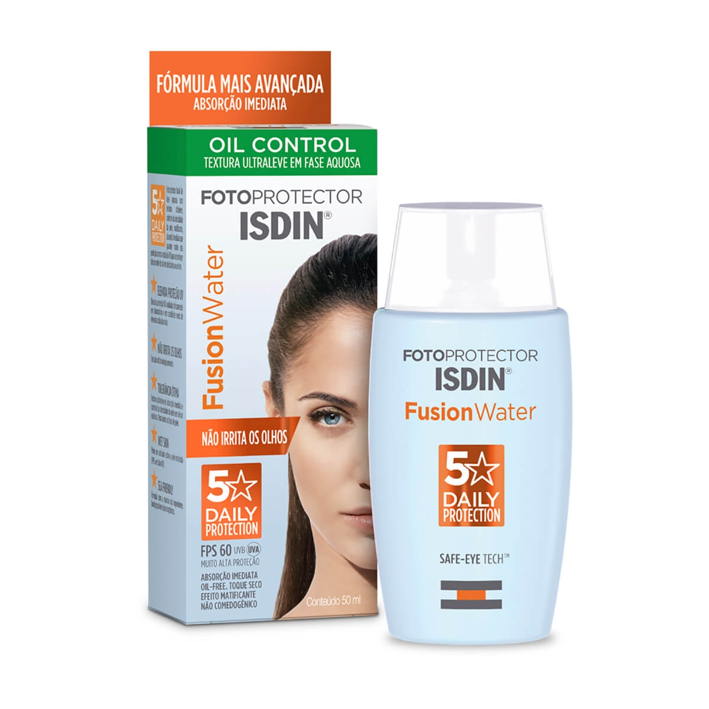
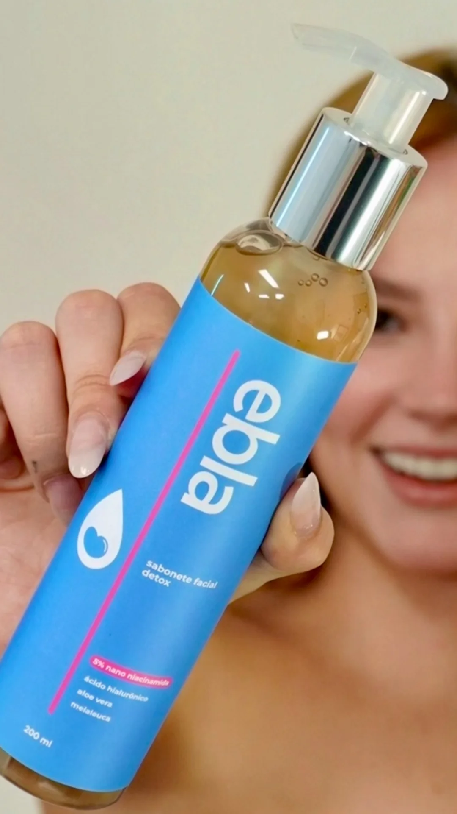
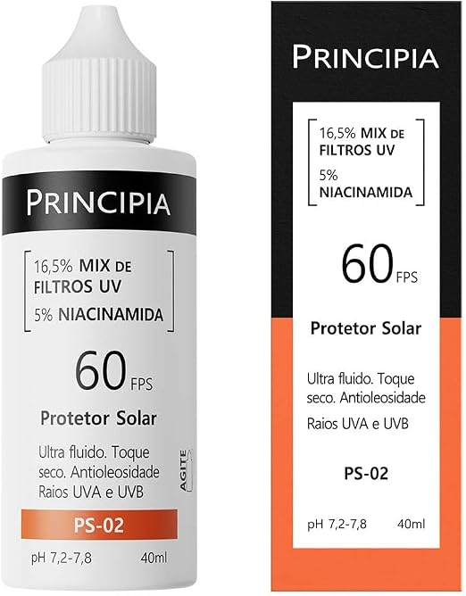

Hidratante Facial Creamy
⭐ Avaliação
⭐ 4.9
Hidratante facial leve que ajuda a manter a pele hidratada e macia ao longo do dia. Possui rápida absorção, não deixa sensação oleosa e é indicado para diferentes tipos de pele.

Creamy Emulsão de Limpeza 180ml
⭐ Avaliação
⭐ 4.9
Emulsão de limpeza suave que remove impurezas sem ressecar a pele. Ajuda a manter a hidratação natural, proporcionando conforto e maciez, sendo ideal para peles secas, normais e sensíveis.

Creamy Skincare Ácido Mandélico 30g
⭐ Avaliação
⭐ 4.8
Sérum de uso noturno que ajuda a controlar a oleosidade, reduzir cravos e espinhas e uniformizar o tom da pele. É muito procurado por quem busca uma pele mais lisa e com menos marcas de acne.

ISDIN Protetor Solar Facial Fusion Water
⭐ Avaliação
⭐ 4.9
Protetor solar facial com textura leve e rápida absorção. Ajuda a proteger a pele contra os raios solares sem deixar sensação oleosa, sendo muito indicado para peles mistas e oleosas.

Sabonete de Limpeza Ebla
⭐ Avaliação
⭐ 4.7
Sabonete facial que ajuda a remover impurezas, excesso de oleosidade e resíduos acumulados ao longo do dia. Limpa a pele sem agredir, deixando uma sensação de frescor e maciez.

Sérum Facial Antiacne Ebla
⭐ Avaliação
⭐ 4.8
Sérum facial desenvolvido para ajudar no controle da acne e da oleosidade. Auxilia na redução de espinhas e marcas, deixando a pele com aparência mais uniforme e saudável.

Principia Protetor Solar Facial
⭐ Avaliação
⭐ 4.8
Protetor solar facial com textura leve e toque seco. Ajuda a proteger a pele contra os raios UVA e UVB, prevenindo manchas e sinais do envelhecimento, sem deixar sensação pesada.